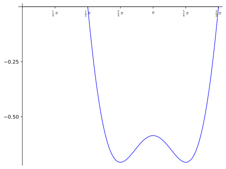

Assume \(f\) is defined on the interval \(I\text{.}\)
\(f\) is increasing on \(I\) if \(a< b\) implies \(f(a)< f(b)\) for all \(a,b\in I\text{.}\)
\(f\) is decreasing on \(I\) if \(a< b\) implies \(f(a)> f(b)\) for all \(a,b\in I\text{.}\)
\(f\) is monotonic on \(I\) if it is either increasing on \(I\) or decreasing on \(I\text{.}\)
Theorem22.2.Derivative and monotonicity.
Assume \(f\) is continuous on the interval \(I\text{.}\)
If \(f'(x)=0\) for all interior points \(x\in I\text{,}\) then \(f\) is a constant function on \(I\text{.}\)
If \(f'(x)> 0\) for all interior points \(x\in I\text{,}\) then \(f\) is increasing on \(I\text{.}\)
If \(f'(x)< 0\) for all interior points \(x\in I\text{,}\) then \(f\) is decreasing on \(I\text{.}\)
Proof.
Statement (1) is identical to Corollary21.5, which we have already proved.
The proofs of (2) and (3) are nearly identical. We prove (2). Assume \(f'(x)> 0\) for all interior points \(x\in I\text{.}\) Suppose \(a,b\in I\) satisfy \(a< b\text{.}\) Since the function \(f\) is continuous on \([a,b]\) and differentiable on \((a,b)\text{,}\) the mean value theorem implies
for all \(a,b\in I\text{.}\) In other words, \(f\) is increasing on \(I\text{.}\)
Before putting Theorem22.2 to good analytic work on some example functions, we first illustrate that we cannot apply the theorem if the underlying set is not an interval.
Example22.3.Monotonicity: reciprocal.
Let \(f(x)=\frac{1}{x}\) with domain \(D=\R-\{0\}\text{.}\) Observe that \(f'(x)=-1/x^2\) is negative for all \(x\in D\text{.}\) However it is not true that \(f\) is decreasing on its entire domain \(D\text{:}\) indeed, we have \(-1< 1\text{,}\) and yet \(-1=f(-1)\not> f(1)=1\text{.}\)
What went wrong here? Why couldnt we apply Theorem22.2? The answer is that \(D\) is not an interval! In fact we have
a union of two intervals. We are permitted to apply Theorem22.2 to \(I_1\) and \(I_2\) separately to conclude that \(f\) is decreasing on each of these intervals, but this does not imply that it is increasing on their union.
According to Theorem22.2 determining the sets on which a function \(f\) is increasing/decreasing essentially amounts to solving the inequalities \(f'(x)> 0\) and \(f'(x)< 0\text{.}\) This is most efficiently done using a sign diagram of \(f'\text{,}\) as illustrated in the next example and defined more precisely in Procedure22.5.
Example22.4.Monotonicity: polynomial.
Let \(f(x)=3x^5-5x^3\text{.}\) Find all intervals where \(f\) is increasing, and all intervals where \(f\) is decreasing.
Since \(f'\) is continuous, and since \(0,1,-1\) are the only roots of \(f'\text{,}\) the intermediate value theorem implies that \(f'\) is either always positive or always negative on each of the resulting intervals \((-\infty,-1),(-1,0),(0,1),(1,\infty)\text{.}\) This means we can determine the sign of \(f'\) on each interval by evaluating it at one test point. It is easy to see that
Thus the sign of \(f'\) for various portions of the real line is described by the following sign diagram.
Note that underneath the information about the sign of \(f'\text{,}\) we have indicated the implied increasing/decreasing behavior of \(f\text{.}\)
From the sign diagram we conclude that \(f\) is increasing on the intervals \((-\infty, -1]\) and \([1,\infty)\text{,}\) and decreasing on the interval \([-1,1]\text{.}\)
Lets give a formal description of the technique used in the example above.
Procedure22.5.Intervals of monotonicity.
Assume \(f\) is continuous on \(D\text{.}\) To determine the intervals where \(f\) is increasing or decreasing, proceed as follows.
Find all critical points of \(f\) in \(D\)
Draw a real line representation of \(D\) that includes the critical points you found in Step 1.
Make a sign diagram of your real line representation of \(D\text{.}\)
Label the top part of this diagram \(f'\) and indicate with \(\pm\) the sign of \(f'\) on a given interval.
(Optional). Label the bottom part of the diagam \(f\) and indicate with arrows whether \(f\) is increasing or decreasing on a given interval.
Theorem22.6.First derivative test.
Assume that \(c\) is a critical point of the function \(f\text{,}\) and that \(f\) is differentiable near, but not necessarily at \(c\text{.}\)
If the sign of \(f'\) changes from positive to negative at \(c\text{,}\) then \(f(c)\) is a local maximum value of \(f\text{.}\)
If the sign of \(f'\) changes from negative to positive at \(c\text{,}\) then \(f(c)\) is a local minimum value of \(f\text{.}\)
If \(f'\) is nonzero near \(c\) and the sign does not change at \(c\text{,}\) then \(f(c)\) is neither a local maximum value nor a local minimum value of \(f\text{.}\)
Procedure22.7.Classify critical points: first derivative test.
Let \(f\) be continuous on the set \(D\text{.}\) To find and classify all critical points of \(f\) as corresponding to a local maximum value of \(f\text{,}\) a local minimum value of \(f\text{,}\) or neither, proceed as follows.
Find all critical points of \(f\text{.}\)
Make a sign diagram of \(f'\text{.}\)
For each critical point \(a\) of \(f\text{,}\) use Theorem22.6 and your sign diagram to determine whether \(f(a)\) is a local maximum value of \(f\text{,}\) local minimum value of \(f\text{,}\) or neither.
Let \(f(x)=3x^5-5x^3\text{.}\) Find all critical points of \(f\text{,}\) and for each critical point \(a\) classify \(f(a)\) as a local maximum value of \(f\text{,}\) a local minimum value of \(f\text{,}\) or neither.
Solution.
In the course of the sign diagram from Example22.4 we saw that \(x=-1,0,1\) were the critical points of \(f\text{.}\) Since the sign of \(f'\) switches from positive to negative at \(-1\text{,}\)\(f(-1)\) is a local maximum value of \(f\text{;}\) since the sign of \(f'\) switches from negative to positive at \(1\text{,}\)\(f(1)\) is a local minimum value of \(f\text{.}\) Since \(f'(x)\ne 0\) for \(x\) close to \(0\) and since the sign of \(f'\) does not switch at \(x=0\text{,}\) we see that \(f(0)\) is neither a local maximum nor a local minimum value.
Example22.9.Monotonicity and critical points: trig.
Let \(f(x)=2\cos x+\sqrt{2}\cos^2 x\) and let \(I=[\pi/2, 3\pi/2]\text{.}\)
Find all critical points of \(f\text{,}\) and for each critical point \(a\) classify \(f(a)\) as a local maximum value of \(f\text{,}\) a local minimum value of \(f\text{,}\) or neither.
Apply Procedure22.5 to find the intervals of monotonicity of \(f\) within \(I\text{.}\)
Since \(f\) is differentiable everywhere, critical points of \(f\) are solutions to \(f'(x)=0\text{.}\) We thus solve:
\begin{align*}
f'(x) \amp =0\\
-2\sin x(1+\sqrt{2}\cos x) \amp = 0\\
\sin x =0 \amp\text{ or } 1+\sqrt{2}\cos x=0 \\
\sin x =0 \amp \text{ or } \cos x=-\frac{1}{\sqrt{2}} \text{.}
\end{align*}
We have \(\sin x=0\) if and only if \(x=\pi n\) for some integer \(n\in \Z\text{.}\) Only one of these solutions lies in \(I=[\pi/2,3\pi /2]\text{:}\) namely, \(x=\pi\text{.}\) Next, observing that \(1/\sqrt{2}=\sqrt{2}/2\text{,}\) and recalling facts about the unit circle, we see that \(x\) solves \(\cos x=-1/\sqrt{2}=-\sqrt{2}/2\) if and only if
\begin{equation*}
x=\frac{3\pi }{4}+2\pi n \text{ or } x=\frac{5\pi }{4}+2\pi n
\end{equation*}
for some integer \(n\in \Z\text{.}\) There are exactly two such solutions lying in \([\pi/2, 3\pi/2]\text{:}\) namely, \(x=3\pi/4\) and \(x=5\pi /4\text{.}\) In conclusion, the critical points of \(f\) are \(3\pi/4, \pi, 5\pi/4\text{.}\)
To finish the problem essentially all we have to do is produce the sign diagram of \(f'\text{.}\)
This was produced by performing the following test point evaluations:
It follows that \(f(3\pi/4)\) is a local minimum value, \(f(\pi)\) is a local maximum value, and \(f(5\pi/4)\) is a local minimum value of \(f\text{.}\)
Furthermore, we see that within the interval \([\pi,3\pi/2]\) the function \(f\) is increasing on \([\pi,3\pi/4]\) and \([\pi, 5\pi /4]\text{,}\) and decreasing on \([3\pi/4, \pi]\) and \([5\pi/4, 3\pi /2]\text{.}\)
We verify our conclusions below with the actual graph of \(f\) on \([\pi, 3\pi/2]\text{.}\)

Figure22.10.Graph of \(f(x)=2\cos x+\sqrt{2}\cos^2 x\)
Example22.11.Monotonicity and critical points: radical.
Let \(f(x)=x\, \sqrt{7-x^2}\text{.}\) Find all critical points of \(f\text{,}\) and for each critical point \(a\) classify \(f(a)\) as a local maximum value of \(f\text{,}\) local minimum value of \(f\text{,}\) or neither.
Solution.
Note first that the implied domain \(D\) of \(f\) is
Following Procedure22.7, we first determine the critical points of \(f\text{.}\) Note first that in this case \(f\) is not differentiable at \(\pm \sqrt{7}\text{,}\) making these critical points. Next, for all \(x\ne \pm \sqrt{7}\text{,}\) we compute \(f'(x)\) using the product and chain rules:
It follows that we have \(f'(x)=0\) if and only if \(7-2x^2=0\text{,}\) or equivalently, \(x=\pm \sqrt{7/2}\text{.}\) We conclude that there are in total four critical points: \(x=\pm \sqrt{7}\) (where \(f\) is not differentiable), and \(x=\pm\sqrt{7/2}\text{.}\)
This diagram was the result of the following test point evaluations of \(f'\text{:}\)
We conclude that \(f(-\sqrt{7})\) and \(f(\sqrt{7/2})\) are local maximum values, and \(f(-\sqrt{7/2}\) and \(f(\sqrt{7}\) are local minimum values. These conclusions are verified by the actual graph of \(f\text{.}\)